표면처리산업기사 (2008-05-11 기출문제)
1과목: 금속재료 및 재료시험
1. 다음 중 구상흑연주철의 조직이 아닌 것은?
- 페라이트(Ferrite)
- 오스테나이트(Austenite)
- 펄라이트(Pearlite)
- 시멘타이트(Cementite)
(정답률: 알수없음)

2. 다음 중 무산소 구리는 어느 것인가?
- OFHC
- DCOA
- TPCO
- UHFM
(정답률: 알수없음)
3. 다음 중 레데뷰라이트(Ledeburite) 조직을 나타낸 것은?
- 마텐자이트(martensite)
- 시멘타이트(cementite)
- α(ferrite) + Fe3C
- γ(austenite) + Fe3C
(정답률: 알수없음)
4. 변형 전과 변형 후의 위치가 어떤 면을 경계로 하여 대칭을 이루는 변형을 무엇이라 하는가?
- 소성
- 슬립
- 전위
- 쌍정
(정답률: 알수없음)
5. 다음 중 60%Cu, 40%Zn 합금의 명칭으로 옳은 것은?
- Inver
- Monel metal
- Muntz metal
- Permalloy
(정답률: 73%)
6. 금속이나 합금 중 면심입방격자에 대한 설명으로 옳은 것은?
- 원자충전율은 68% 이다.
- 단위정 내에 2개의 원자가 있다.
- 면심입방격자의 표기는 BCC로 한다.
- 대표적인 금속은 Cu, Al, Ni 등이다.
(정답률: 알수없음)
7. 내식성과 내충격성, 기계가공성이 우수한 18-8스테인리스강(stainless steel)의 화학적 성분으로 옳은 것은?
- 18% Cr, 8% Ni
- 18% Ni, 8% Co
- 18% W, 8% Mo
- 18% Mo, 8% P
(정답률: 알수없음)
8. 그림과 같은 원자간 결합을 무엇이라 하는가?
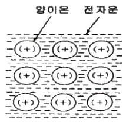
- 반데르 발스 결합(vander waals bond)
- 금속 결합(metallicbond)
- 이온 결합(ion bond)
- 공유 결합(covalent bond)
(정답률: 알수없음)
9. 5~100μm 정도의 Cu, Sn, 흑연분말을 혼합한 후 윤활제를 첨가하여 가압성형, 환원기류 중에서 예비, 본소결을 거쳐 제조한 소결함유 베어링은?
- 오일라이트(oillite)
- 스텔라이트(stellite)
- 텅갈로이(tangalloy)
- 비디아(widia)
(정답률: 알수없음)
10. 다음 중 형상기억합금에 대한 설명으로 틀린 것은?
- 형상기억합금으로는 Ti-Ni 합금계가 있다.
- 고상에서 확산을 수반하지 않고 주로 전단변형에 의하여 결정구조가 변하는 상변태이다.
- 인정하거나 소성변형한 것이 가열에 의하여 원래의 형태로 돌아가는 현상을 형상기억효과라고 한다.
- 고온에서 냉각하면 마텐자이트 상에서 오스테나이트상으로 된다.
(정답률: 알수없음)
11. 작은 금속조각을 금속현미경으로 조직 검사하는 절차를 올바르게 나타낸 것은?
- 시편채취 → 부식 → 샌드페이퍼 연마 → 마운팅 → 세척 → 광택연마 → 현미경 관찰
- 시편채취 → 마운팅 → 샌드페이퍼 연마 → 광택연마 → 세척 → 부식 → 현미경 관찰
- 시편채취 → 샌드페이퍼 연마 → 광택연마 → 마운팅 → 세척 → 부식 → 현미경 관찰
- 시편채취 → 광택연마 → 마운팅 → 샌드페이퍼 연마 → 부식 → 세척 → 현미경 관찰
(정답률: 알수없음)
12. 압축데 대한 응력-압률선도에서 m = 1 일 때에 해당하는 것은? (단, m은 재료에 따른 상수이다.)
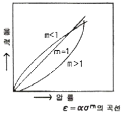
- 주철
- 완전탄성체
- 피혁
- 고무
(정답률: 알수없음)
13. 다음중 방사선투과검사에서 사용되는 방사성 동위원소의 반감기가 가장 짧은 것은?
- Tm
- Ir
- Cs
- Co
(정답률: 알수없음)
14. 전자현미경실에서 기기의 상태를 좋은 상태로 유지하기 위한 조치로 틀린 것은?
- 항온 유지
- 항습 유지
- 소음과 진동 유지
- 분진방지
(정답률: 알수없음)
15. 다음 비파괴 시험법 중 내부 결함의 검출에 가장 적합한 것은?
- 방사선투과시험
- 침투탐상시험
- 자분탐상시험
- 와전류탐상시험
(정답률: 알수없음)
16. 현미경으로 철강 시험편의 조직을 관찰하기 위하여 사용하는 부식제는?
- 염화 제2철 용액
- 염산 용액
- 나이탈 용액
- 왕수
(정답률: 알수없음)
17. 브리넬경도 시험(Brinell Hardness Test)값을 구하는 식으로 옳은 것은? (단, P = 하중, D = 강구의 지름, d = 압흔의 지름, h = 압흔의 깊이이다.)
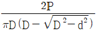
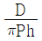
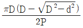
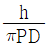
(정답률: 알수없음)
18. 피로시험의 S-N 곡선에서 S와 N의 의미로 옳은 것은?
- S : 응력, N : 반복횟수
- S : 질량, N : 응력
- S : 반복응력, N : 시간
- S : 질량, N : 반복횟수
(정답률: 알수없음)
19. 크리프(Creep) 시험에서 정상 크리프단계를 설명한 것은?
- 크리프의 진행 중 크리프의 속도가 감소하는 단계
- 크리프의 진행 중 크리프의 속도가 일정한 단계
- 크리프의 진행 중 크리프의 속도가 증가하는 단계
- 크리프의 진행 중 가공경화가 연화보다 크게 되는 단계
(정답률: 93%)
20. 다음 중 금속의 결정입도 측정방법이 아닌 것은?
- ASTM 결정립 측정법
- 조미니(Jominy) 시험법
- 제프리즈(Jefferies)법
- 헤인(Heyn)법
(정답률: 70%)
2과목: 표면처리
21. 다음 반응은 화학증착법에서 어떤 반응형식에 해당하는가?
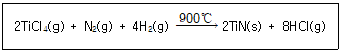
- 고체확산
- 반응증착
- 수소환원
- 열분해
(정답률: 알수없음)
22. 용융주석 도금의 용제처리에 사용되는 성분이 아닌 것은?
- 염화제일주석
- 염화아연
- 염화암모늄
- 염산
(정답률: 알수없음)
23. 전류계의 전류가 300A이고, 전원전압과 욕전압이 각각 6V와 2V 일 때, 전력손실은 약 몇 kW 인가?
- 1.2
- 1.5
- 2.2
- 4.0
(정답률: 알수없음)
24. 세라믹표면의 도금에서 알루미나 소지의 에칭액으로 사용되는 것은?
- HF
- HBF4
- Pb
- HCl
(정답률: 알수없음)
25. ABS 수지상에 도금하는 공정 중 캐탈리스팅과 엑셀러레이터 공정에 사용되는 약품이 아닌 것은?
- 염산
- 황산
- 염화팔라듐
- 차아인산나트륨
(정답률: 알수없음)
26. 다음 중 산처리와 관계가 먼 것은?
- 산화피막 제거
- 금속피막 보호
- 수산화물 제거
- 외관과의 밀착성 향상
(정답률: 알수없음)
27. 붕소 플루오르화 구리 도금은 어떤 목적으로 실시하는가?
- 고속도 도금을 위하여
- 광택 도금을 위하여
- 레벨링을 좋게 하기 위하여
- 스트라이크 도금이 필요없기 때문에
(정답률: 80%)
28. 다음 중 전해탈지에 대한 설명으로 틀린 것은?
- 최종 탈지과정에 속하는 완성탈지 방법이다.
- 양극전해탈지는 음극전해탈지보다 효율이 높다.
- 음극전햍라지는 수소취성을 일으키기 쉽다.
- 음극, 양극탈지를 보완한 밥업으로 P.R 전해탈지법이 있다.
(정답률: 알수없음)
29. 전기도금의 전착 방법에 의한 금속 제품의 제조 또는 원래 모양을 그대로 세밀하게 뜨는 도금 방법은?
- 스트라이크도금
- 금속침투도금
- 전주도금
- 화성처리도금
(정답률: 70%)
30. 35cm×15cm 크기의 판을 도금하는데 40A의 전류가 흘렸다면 전류밀도는 약 몇 A/dm2 인가? (단, 두께는 무시한다.)
- 3.8
- 4.8
- 5.8
- 6.8
(정답률: 알수없음)
31. 알칼리성 무전해 구리도금을 할 때 구리착염 용액에서 일반적으로 많이 사용하는 환원제는?
- 포르말린
- 황화합물
- 질소화합물
- 시안화합물
(정답률: 알수없음)
32. 하링(Haring cell)은 무엇을 조사하기 위한 시험인가?
- 전류효율
- 균일전착성
- 불순물조사
- 전류밀도
(정답률: 알수없음)
33. 도금액에 첨가되는 유기 광택제의 영향이 아닌 것은?
- 결정의 미세화
- 경도의 감소
- 광택의 향상
- 평활성의 증가
(정답률: 알수없음)
34. 다음 중 직류스퍼터링(DC Sputtering)의 설명으로 틀린 것은?
- 고에너지로 기판에 들어오게 되므로 밀착력이 크다.
- 조성이 복잡한 것은 적용하기 어려운 단점이 있다.
- 비교적 구석구석 도금이 잘된다.
- 전류량과 생성피막이 두께는 정비례한다.
(정답률: 알수없음)
35. 다음 중 알루미늄 양극산화법을 적용할 수 없는 것은?
- 수산법
- 크롬산법
- 염산법
- 황산법
(정답률: 알수없음)
36. 철강 표면을 청색으로 착색할 때의 조성으로 적합하지 않는 것은?
- 아비산 + 염산 + 물
- 황산니켈암모늄 + 황산구리 + 과염소산칼륨
- 염화제이수온 + 염소산칼륨 + 알코올 + 물
- 염화제이철 + 질산제이수은 + 염산 + 알코올 + 물
(정답률: 알수없음)
37. 다음 중 금속 전처리 표면의 청정도 판정법이 아닌 것은?
- 도금에 의한 방법
- 유용성 염료에 의한 방법
- 물에 젖는 상태에 의한 방법
- 전기계기로 측정해 보는 방법
(정답률: 알수없음)
38. 다음 중 아연도금피막의 성질에 대한 설명으로 옳은 것은?
- 산, 알칼리에 대해서 강한 금속이다.
- 철에 대하여 방식성이 크다.
- 구리, 니켈, 크롬 도금에 비해 경도가 높다.
- 구리, 니켈, 크롬 도금에 비해 변색이 잘되지 않는다.
(정답률: 알수없음)
39. 다음 중 내식(耐蝕)성 시험방법이 아닌 것은?
- 유공도시험(pin hole test)
- 염수분무시험(salt spray test)
- 코로드코오트시험(corrodkote test)
- 내부응력시험(stress test)
(정답률: 알수없음)
40. 다음 중 황동도금액의 액조성과 관계없는 것은?
- 수산화나트륨
- 시안화제일구리
- 시안화아연
- 염화니켈
(정답률: 알수없음)
3과목: 부식방식
41. 외부에서 양극 전류를 흐르게 하여 금속의 표면에 부동태의 보호 피막을 형성시켜 방식하는 방법은?
- 펄스방식
- PR방식
- 음극방식
- 양극방식
(정답률: 알수없음)
42. 동일 조건에서 생산된 여러 개의 시험편을 부식시험코자할 때 재현성을 높이기 위한 조건으로 타당성이 가장 결여된 것은?
- 응력조건이 같아야 한다.
- 조성이 일정하여야 한다.
- 표면상태가 균질하여야 한다.
- 한사람에 의하여 시험되어야 한다.
(정답률: 알수없음)
43. 다음 중 갈바닉부식을 방지시키기 위한 방법으로 틀린 것은?
- 소양극-대음극의 부식원리를 고려하여 조임쇠 등은 덜 귀(貴)한 전위의 금속을 사용한다.
- 이종 금속을 함께 사용할 경우 갈바닉계열상 거리가 먼 두 금속을 사용한다.
- 갈바닉계열에서 멀리 떨어진 금속끼리의 나사접합을 피한다.
- 갈바닉 접촉을 이루고 있는 두 금속보다 활성전위를 가진 금속을 설치한다.
(정답률: 알수없음)
44. 미주전류부식(stray current corrosion) 대한 설명으로 옳은 것은?
- 주파수가 낮을수록 부식경향이 적다.
- 직류보다는 교류에 의한 부식이 더 크다.
- 토양 중에 존재하는 외부전류가 금속조직 속으로 들어 가는 곳에서 부식이 발생한다.
- 희생양극을 설치하여 부식이 희생양극에서만 발생하도록 한다.
(정답률: 알수없음)
45. 다음 중 희생양극에 의한 음극방식 방법을 사용할 때 가장 많이 이용되는 금속은?
- Al
- Fe
- Ni
- Zn
(정답률: 알수없음)
46. 황동의 응력부식균열에 대한 감수성을 감소 또는 제거하는 방법으로 옳은 것은?
- 응력제거 열처리(stress relief heat treatment)를 실시한다.
- NH3 또는 아민(amine) 분위기에서 사용한다.
- 소성변형 환경에서 사용하도록 한다.
- H2S 와의 접촉을 피한다.
(정답률: 알수없음)
47. 다음 중 전기화학적 부식에 대한 설명으로 틀린 것은?
- 전자가 흐르면서 부식하는 현상이다.
- 이온화 경향이 큰 합금사이에서는 발생되지 않는다.
- 부동태는 부식하기 힘든 상태를 말한다.
- 상대적으로 비(卑)한 금속은 활성 상태가 된다.
(정답률: 알수없음)
48. 실험실 부식시험 중 모형시험(Model Test)에 대한 설명으로 옳은 것은?
- 실제 사용되고 있는 설비 혹은 장치에서 행해진다.
- 자연환경에 사용하기 위해 가장 적당한 재료 혹은 방식법을 찾아내는데 이용된다.
- 실제 사용조건 경우보다 더 빠른 속도로 부식 진행시키는 방법이다.
- 부식을 촉진시키지 않고 오랜 기간에 걸쳐 행하는 시험이다.
(정답률: 알수없음)
49. 페러데이 벌칙을 나타낸 식으로 옳은 것은? (단, W : 전극상에 석출 또는 용해하는 물질의 질량, I : 전류의 세기, t : 전류가 흐른 시간, eq : 석출 또는 용해한 물질의 양, F : 페러데이 상수)
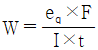
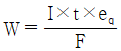
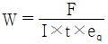
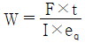
(정답률: 알수없음)
50. 다음 중 전해질이 아닌 것은?
- 황산
- 염화나트륨
- 메탄올
- 수산화나트륨
(정답률: 알수없음)
51. 방식을 필요 이상으로 과도하게 음극분극시키면 다른 장애가 일어날 수 있다. 이러한 과방식에 의한 손실이 아닌 것은?
- 전력의 낭비
- 양극의 소모 증가
- 수소취성 및 수소균열
- 청열취성
(정답률: 83%)
52. 그림은 황산용액 중 철의 전형적인 분극곡선을 나타낸 것이다. 이 때 산화물 피막이 가수분해하여 이온의 형태로 다시 녹는 과부동태가 되는 곳은?
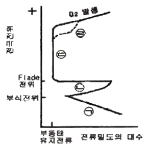
- ㉠
- ㉡
- ㉢
- ㉣
(정답률: 알수없음)
53. 방식을 위한 도금법 중 외관이 아름답고 대기 중에서 변색되지 않으며, 염산 이외의 산이나 알칼리에 부식되지 않으나 균열이나 핀홀이 생기기 쉽기 때문에 소재금속을 완전히 피복하기 어려운 특징을 갖는 도금은?
- 아연도금
- 구리도금
- 니켈도금
- 크롬도금
(정답률: 55%)
54. 도금의 걸이(rack)로 사용되는 재료 중 전기전도율이 가장 낮은 것은?
- Al
- Cu
- Ti
- Pb
(정답률: 알수없음)
55. 다음 중 스테인리스강의 입계 부식을 방지하는 방법으로 옳은 것은?
- 탄소함유량을 1.5% 이상 높인다.
- A1 온도까지 가열한 후 로냉한다.
- Sn, Ni, Zn 등의 원소를 첨가한다.
- 약 1⑤0~1150℃ 정도의 온도까지 가열한 후 수냉시킨다.
(정답률: 알수없음)
56. 기계의 베이링부에 주로 발생하는 프렛팅(fretting) 부식을 방지 또는 감소시키기 위한 방법이 아닌 것은?
- 기름 및 그리이스(grease) 등과 같은 윤활제와 함께 사용한다.
- 접촉하고 있는 두 금속 중의 하나 또는 모두의 경도를 증가시킨다.
- 마찰계수가 큰 금속을 사용한다.
- 가스켓을 사용하므로서 진동을 흡수하고 산소를 제거시킨다.
(정답률: 알수없음)
57. 지중시설물을 부식으로부터 방지할 수 있는 방법을 설명한 것으로 틀린 것은?
- 혐기성박테리아를 적게 한다.(토양을 바꾼다.)
- 유기 또는 무기의 피복을 입힌다.
- 금속피복을 입힌다.
- 양극보호를 한다.
(정답률: 알수없음)
58. 다음 중 대기부식에 대한 설명으로 옳은 것은?
- 대기중의 먼지는 부식에 별로 영향을 미치지 않는다.
- 대기중의 보통 존재하게 되는 소량의 CO2는 부식에 영향을 미치지 않는다.
- 공업지대의 대기에 존재하는 SO2는 부식에 영향을 미치지 않는다.
- 임계상대습도 이하에서는 대기부식이 심하게 일어난다.
(정답률: 알수없음)
59. 다음 중 토중부식에 영향을 미치는 흙의 성질이 아닌 것은?
- 다공성
- 함수량
- 전기전도도
- 황색의 빛깔
(정답률: 100%)
60. 중성염수분무 시험조건 중 분무액의 pH로 적당한 것은?
- 1.0~2.0
- 2.2~3.2
- 4.5~6.2
- 6.5~7.2
(정답률: 알수없음)
오스테나이트는 철과 탄소가 고루 분포되어 있는 상태로, 강도와 경도가 낮은 상태이다. 이 상태에서 열처리를 통해 다른 조직으로 변화시킬 수 있다.
반면에, 페라이트는 철과 탄소가 단순 혼합된 상태로, 강도와 경도가 낮은 상태이다. 펄라이트는 페라이트와 시멘타이트가 번갈아 나타나는 조직으로, 강도와 경도가 높은 상태이다. 시멘타이트는 철과 탄소가 고루 분포되어 있지 않고, 탄소 함량이 높은 상태로, 강도와 경도가 높은 상태이다.